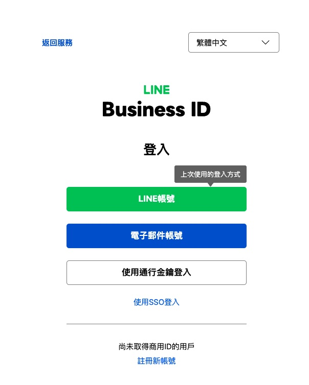

這篇在講什麼
我的 LINE 官方帳號是對外的聯絡窗口，另外還有 Threads、IG、YouTube 等平台的留言和私訊。手機通知一多就滑掉，點開看過的訊息手機也不會再提醒，所以我讓 AI 秘書每天早晚把這些地方整理成一份報告。問題出在官方帳號的後台網頁會自己登出，我又常忘記按登入，那幾天報告就讀不到官方 LINE。
- 已經讓 AI 幫你收訊息、整理報告，卻常因為登出而斷掉的人
- 訊息分散在好幾個平台，想要一份總整理的人
- 想知道「哪些事可以放心讓 AI 自己做」的人
- 讓 AI 自己按登入、只看不回的做法
- 「看過但還沒回」的提醒怎麼判斷
- 我判斷一件事能不能交給 AI 自己做的五個理由，和一段可以直接貼給 AI 的交代
秘書早晚報：AI 每天 06:45、16:45 各跑一次，把各平台有人找我的訊息整理成一張待辦卡片。
官方 LINE 一登出，AI 秘書就讀不到，我以為沒人找我
AI 秘書讀官方帳號的方式，是打開官方帳號的後台網頁看對話列表。後台的登入會過期，過期之後它打開的是登入頁，沒有訊息可讀。報告第一段會寫「要你登入」，但這一段很容易被我略過；我本來打算每天早上開電腦順手登入，總有幾天會忘。兩件事疊在一起，那幾天就一直讀不到。
讓 AI 自己按登入，碰到驗證就停
我問 AI 能不能讓秘書自己去登入。它的回答是：LINE 要密碼、行動條碼或驗證碼的時候，哪個 AI 都不該代打；LINE 還記得我的時候，按一下就能進去。所以我只交出「按那顆綠色鍵」這一個動作。

LINE 記得我的時候，按下去就直接進後台；有時會多一頁「登入」確認，也只按那一顆。
其他登入方式都要輸入東西或做驗證，一律不碰。
秘書早晚報跑的時候，用 ego lite 打開官方帳號後台。
看到登入頁，只按綠色的「LINE帳號」，和之後那一顆「登入」。
出現任何輸入欄、行動條碼或驗證碼就停，報告第一段寫「要你登入」。
不點進任何對話，客人的訊息不會變成「已讀」。
還沒讀的；和我看過但還沒回的。
看過但還沒回的訊息，每天再提醒一次
只看「還沒讀」不夠。我常在手機上點開看了，想說等一下再回，結果忘了；這種訊息已經不是未讀，手機不會再提醒，報告原本也不會。
現在只要同時符合這三件事，就每天提醒我一次，直到我回了為止：
- 14 天內的對話
- 最後一則是對方傳的，或只有官方帳號的自動回覆
- 我沒在後台把它標成「已完成」
手機 App 也能自己篩，但我常常滑掉通知、忘了打開 App，加上要顧好幾個平台。早晚報是主動把「還有人在等你」放到我眼前。加上這個提醒之後，當天實測就抓到 3 位看過沒回的對話。
- 怎麼做一個 AI 小秘書｜Gmail、行事曆、LINE 群的進度都幫你盯著：還沒有 AI 秘書的話，那篇從頭講一個每天幫你看信、看行程的小秘書怎麼設。
哪些資料會送給 AI，什麼情況不要這樣做
AI 只讀對話列表，不點進對話。列表上每一則會讀到的是：對方的名字、最後一則訊息的開頭、時間。這些會交給雲端的 AI 模型整理，寫進我自己的待辦卡片。
另外，瀏覽器一直保持登入，等於把官方帳號後台的鑰匙留在那台電腦上。先確認那台電腦只有你自己在用、離開時會鎖螢幕。
為什麼比較省：步驟固定就寫成腳本，AI 只讀結果
這段掃描是事先寫好、照順序自動跑的一小段程式（腳本），交給 ego lite 執行：打開後台、讀列表、整理成清單。過程中不用 AI 一張一張看截圖、決定下一步按哪裡；AI 只在最後讀那份清單，寫成早晚報。AI 每看一張截圖都在用額度（用量單位叫 token），讀一份文字清單用得少很多。
每一步截圖給 AI 看，AI 想好再按下一步。適合第一次摸索、步驟還沒固定的時候。
步驟固定之後寫成腳本，瀏覽器照跑，AI 只讀最後的清單。適合每天重複的同一件事。
每天兩次、每次八個平台左右，這個差別會累積。ego lite 在這裡的角色，是讓腳本有一個已經登入、又不跟我搶的瀏覽器可以跑，我自己的 Chrome 照常用。為什麼我把 Chrome 留給自己、讓 AI 用 ego lite，我另外寫了一篇（即將上線）。
- 叫 AI 幫我發文，會被平台封鎖嗎？｜我試過 API、Grok Bot，最後選 Claude in Chrome：這段講 AI 用哪個瀏覽器，那篇講我為什麼讓 AI 走網頁操作，以及我守的界線。
我為什麼敢讓 AI 幫我按登入：五個理由
- 不按的話會漏看訊息，人家在等我回。
- 它跑在我家的 Mac mini 上，不是會帶出門的筆電。
- 它只看訊息，不幫我回。
- 按登入本來就是無腦按，我自己按的時候也沒在檢查。
- 遇到要密碼或驗證碼，它會停下來叫我。
我覺得最關鍵的是第四個。每天按登入這件事，我自己按的時候也是看都不看就按。這種確認留在我手上，擋不住什麼，只會讓我漏掉訊息。前提是另外四個理由也都成立：它只看不回、只認那兩顆鍵、碰到密碼或驗證碼就停、跑在我自己的電腦上，所以這一步放手的風險很小。
反過來說，只要其中一個不成立，我就不會交給 AI。換成我會帶出門的筆電、換成要它幫我回訊息、換成我每次都會認真看內容的那一步，都不行。
- AI 一直停下來要授權，怎麼讓它順順跑完？：迴圈護欄的五條規則：這段講什麼事可以一直交給 AI 做，那篇講 AI 連續自動工作時，怎麼讓錯誤不會一路滾下去。
可以直接貼給 AI 的交代，和還沒驗證的地方
前提有三個：①你的 AI 工具能定時執行、能操作瀏覽器（例如 Claude Code 搭配 ego lite）；一般只能聊天的 AI 做不到定時，也可能為了看清楚而點進對話，讓訊息變成已讀 ②那個瀏覽器已經登入過 LINE 官方帳號後台 ③跑在只有你在用的電腦上。第一次先讓它只看、不要按登入，看過再放手。
下面這段是貼給 AI 的需求。建議請它先陪你手動跑一次，確認步驟對了，再幫你把這五步寫成固定腳本、設定每天早晚自動跑；這樣每天跑的是腳本，AI 只讀結果。
這套做法還沒驗證、做不到的地方
- 自動按登入這一段，還沒實際跑過。寫這篇的時候我是登入狀態，還沒遇到被登出的那一輪；跑過之後我會回來補上結果。「看過沒回」提醒已經實測過。
- LINE 要驗證的時候，還是要我自己來。LINE 不記得我了，要掃行動條碼或收驗證碼，AI 會停下來叫我。
- 它只看，不幫我回。誰該怎麼回，還是我自己決定。
- 只在我家裡這台電腦上跑。這是我交給它的前提，不適用在別的電腦。
- 看過沒回只看 14 天內的。超過 14 天的對話不會再提醒。
- 幫客戶管官方帳號，這篇沒有涵蓋。這篇只講我自己的帳號；幫客戶做，在誰的電腦跑、授權範圍、資料送給誰，都要另外跟客戶談。
- 怎麼做一個 AI 小秘書｜Gmail、行事曆、LINE 群的進度都幫你盯著
- 叫 AI 幫我發文，會被平台封鎖嗎？｜我試過 API、Grok Bot，最後選 Claude in Chrome
- AI 一直停下來要授權，怎麼讓它順順跑完？：迴圈護欄的五條規則
- 電腦關了，AI 還會幫你做事嗎？：為什麼我讓秘書跑在家裡那台一直開著的電腦上。
- 公司資料可以貼給 AI 嗎？｜先搞清楚這兩條紅線：AI 碰得到你電腦裡的什麼，交出去之前要先想的事。